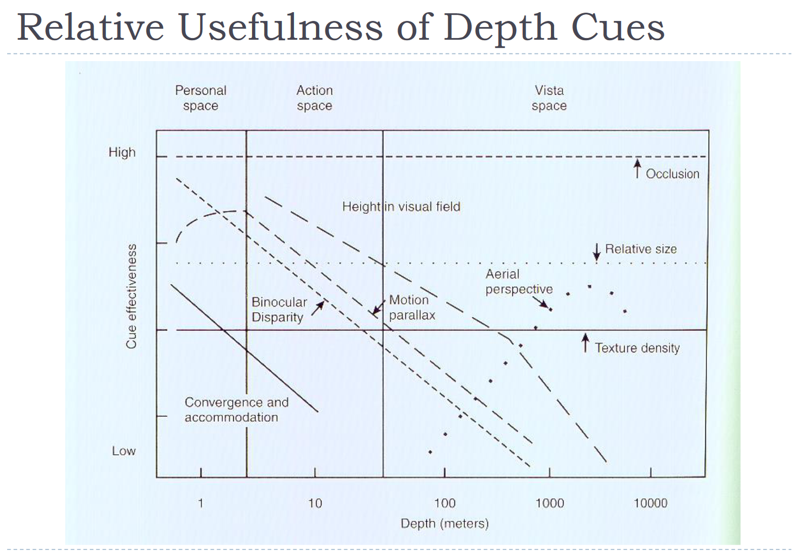

Sensor System (Visual)
인간 공학
개념 정리
인간의 시각 감각 시스템에 대해 알아봅니다.

눈의 구조
- 결막 (conjunctiva): 눈을 보호
- 각막 (cornea): 빛을 굴절
홍채(iris): 빛의 양을 조절- 동공 (pupil): 빛이 들어오는 곳
수정체(lens): 빛을 집중하는 역할- 공막 (sclera): 눈을 보호
- 유리체 (vitreous humor): 눈을 유지
망막(retina): 빛을 감지- 망막의 세포
- Nerve cell: 빛을 감지
- Photoreceptor: 빛을 감지
간상세포(cone): 세부적인 정보, 색상 인식, photopic conditions. fovea에 몰려있음. 짧은 파장의 색에 더 민감함막대세포(rod): 어두운 곳에서 활동, 주변 시야 빛을 받으면rhodopsin이 분해됨, scotopic conditions. 긴 파장의 색에 더 민감함.
- Choroid: 영양 공급
- 시신경(optic nerve): 망막에서 뇌로 정보 전달
- 맹점(optic disk)
light adaption
- 눈이 어두운 곳에서 밝은 곳으로 이동할 때, 시간이 걸림
- 명순응동안 rod sensitivity가 감소하고 cone sensitivity가 증가
- 어두운 곳에서 밝은 곳으로 이동할 때, 눈이 눈부실 수 있음
- 암순응동안 cone sensitivity가 감소하고 rod sensitivity가 증가
color vision
- cone cell의 photo-pigment(RGB 64:32:2)로 색상을 인식
- 망막 중앙에는 파란색이 없음
- sharpness는 brightness와 color difference에 영향을 받음
- 사람은 7백만가지 색상을 인식할 수 있음
design with color
- Mono-chromatic: 단색
- Analogous: 비슷한 색
- Complementary: 반대 색
before design
- 굳이 흑백을 안쓰고 color를 사용해야하는 이유가 있는지
- color가 텍스트나 object에 적합한지
- color가 이해나 관습에 도움이 되는지
- 노안 / 색맹 고려
depth perception
depth judgment
- object-centered cues
- linear perspective: 두 평행선이 좁을 수록 더 멀리 있는 것으로 인식
- interposition(occlusion): 물체가 다른 물체를 가리면 가려진 물체가 더 멀리 있는 것으로 인식
- height in the plane: 물체가 높이 있을수록 더 멀리 있는 것으로 인식
- light and shadow: 빛과 그림자로 물체의 거리를 인식
- relative size: 물체가 작을수록 더 멀리 있는 것으로 인식
- texture gradient: 물체가 멀어질수록 세부적인 텍스처가 사라짐
- brightness: 물체가 밝을수록 더 가까이 있는 것으로 인식
- aerial perspective: 물체가 먼발에서 가까워질수록 색이 흐려짐
- motion parallax: 물체가 빠르게 움직일수록 더 가까이 있는 것으로 인식 fixation point
- observer-centered cues
- binocular disparity: 두 눈의 시각적 차이
- convergence: 눈이 물체를 바라볼 때 발생하는 각도
- accommodation: 눈의 렌즈가 물체를 바라볼 때 발생하는 조절. 가까운 물체일수록 렌즈가 더 둥글어짐
